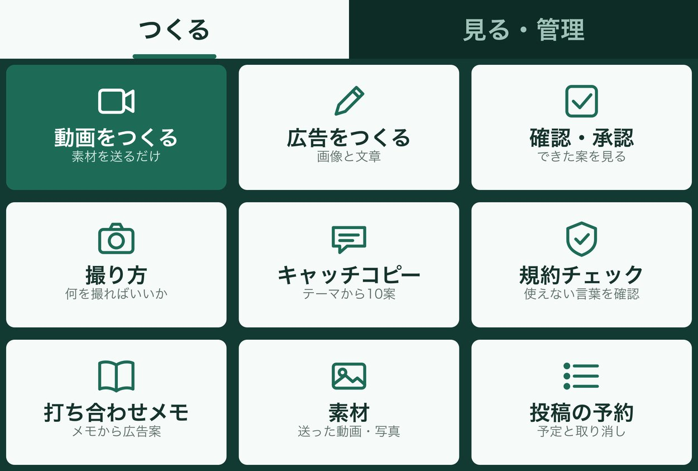
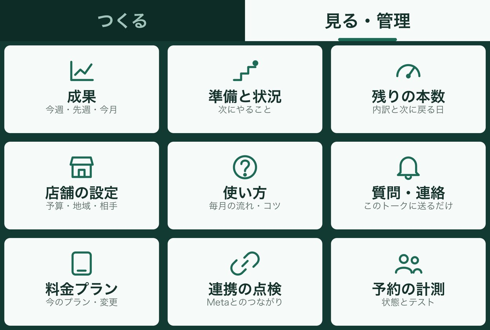
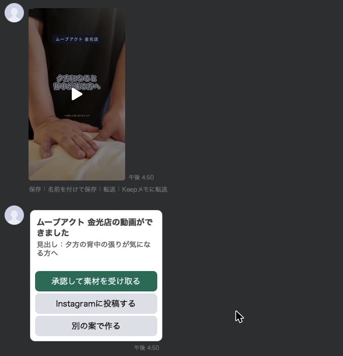
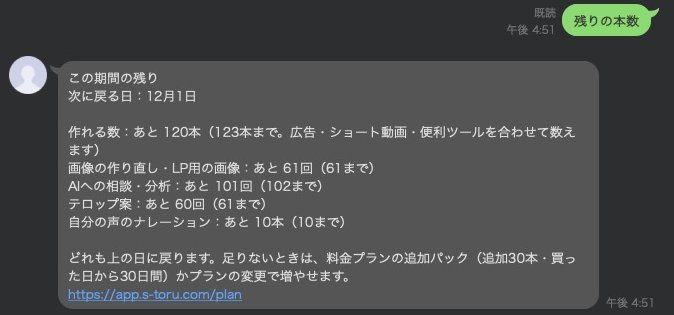

はじめに
マカセル はじめての使い方
公式LINEで進める、Instagram・Facebook広告のサービスです。この資料だけで使い方が分かります。
株式会社しっとる
はじめに
この資料の読み方
今の状況に合う章から読んでください。全部を一度に読まなくても大丈夫です。
今の状況ごとに、読む章
| 今の状況 | 読む章 | まずすること |
|---|---|---|
| まだ登録していない | 「はじめるまで」 | 公式LINEを友だち追加する |
| 申し込みが済んだ | 「はじめるまで」のMetaの準備 | Metaで、しっとるに許可を出す |
| Metaの許可を出し終えた | 「素材」と「毎月の流れ」 | お店の動画・写真を撮っておく |
| 広告が始まった | 「成果とレポート」 | 月曜の朝のレポートを読む |
| 困っている | 「困ったとき」 | 画面の写真をLINEに送る |
「」の中は、この資料の章の名前です。動画で見たい方は、最後のページ「資料と動画の一覧」からどうぞ。
くわしくは
動画で見る（全9章）マカセルのご説明 2 / 28
はじめに
マカセルとは
動画づくりから投稿・広告まで、しっとるが進めます。お客様は公式LINEで確かめるだけです。
3つの柱
- しっとるが進める：毎月の動画を作り、投稿と広告まで
- LINEで確かめる：届いたものを見て、ボタンを押すだけ
- ご自身でも作れる：公式LINEのメニューから追加で
お金のしくみ
- しっとるへ：マカセルの料金（毎月決まった額）
- Metaへ：広告費（お客様のカードから直接お支払い）
- 広告は、お店の広告アカウント（広告用の入れ物）で出します
- 広告費をいくら使うかは、お客様が決めます
Meta＝FacebookとInstagramの会社です。広告費から手数料はいただきません。次のページで役わりをご確認ください。
マカセルのご説明 3 / 28
はじめに
しっとるが進めること・ご自身のこと
むずかしい所はしっとるが進めます。ご自身は、送る・確かめるが中心です。
しっとるが進めること（初回のお支払いの後から）
- 毎月の動画を、希望を伺って作る
- お店の登録と、Metaとのつなぎ
- 条件にOKをいただいた広告を始める
- 毎朝の判定と、毎週月曜のレポート
- はじめの設定を、Zoomで一緒に
ご自身で進めること
- アカウントを作り、プランを申し込む
- Metaで、しっとるに権限（許可）を渡す
- お店の動画・写真を公式LINEで送る
- 届いたものを、公式LINEのボタンで確かめる
しっとるの担当者が進める分は、初回のお支払いの後から始まります。出す・止める・予算は、いつもお客様のご判断です。
マカセルのご説明 4 / 28
はじめるまで
はじめるまでの流れ
ご自身で行うことは5つです。「権限を渡す」は、お店の広告をしっとるが扱えるよう許可を出すことです。
ご自身で行うこと
- 公式LINEを友だち追加し、「アカウントを作る」を押す
- 「料金プラン」でカードを登録し、「申し込みを確かめる」を押す
- Metaで、しっとるに権限を渡す（パソコンが必要です）
- 公式LINEに「権限を渡しました」と一言送る
- お店の動画・写真を撮っておく（送り方は「素材」の章）
初回のお支払いの後、しっとるが行うこと
- マカセルにお店を登録し、Metaとつなぐ
- お店のFacebookページ・Instagram・広告アカウントを点検する
- 希望を伺って、毎月の動画を作る
- OKをいただいた広告を出し、毎日見直す
お申し込みが済むと、契約書がご登録のメールに届きます。パスワードやカード番号を、しっとるがお聞きすることはありません。
マカセルのご説明 5 / 28
はじめるまで
Metaの準備でお願いする3つ
お願いは、お店のアカウントを作る・広告費のカードを登録する・しっとるに許可を出す、の3つです。
進める順番
- Facebookの個人アカウントと、お店のFacebookページを用意する
- お店のInstagramを、Facebookページにつなぐ
- 広告アカウントを作り、広告費のカードをご自身で登録する
- しっとるを「パートナー」に追加して、許可を出す
- 公式LINEに「権限を渡しました」と一言送る
ご用意いただくもの
- Facebookにログインできるパソコン
- お店のInstagramにログインできるスマホ
- 広告費を払うカード（クレジット・デビット）
- 月に使う広告費と、広告を見た方の行き先を決めておく
- 道順は、マカセルの画面の「Meta広告の準備」に順に出ます
以前ほかの会社に広告を頼んでいた方は、はじめる前に下の「以前ほかの会社に頼んでいた方へ」をご覧ください。
マカセルのご説明 6 / 28
はじめるまで
公式LINEの友だち追加とログイン
友だち追加の直後は「はじめての方はこちら」のメニューです。まず左上の「アカウントを作る」を押します。
友だち追加からアカウントまで
- QRから公式LINE「マカセル通知」を友だち追加する
- メニュー左上の「アカウントを作る」を押す
- お名前・メールアドレス・パスワードを入れて登録する
- 規約を確かめ、会社名と店舗名を入れる
- マカセルの画面（ブラウザで開くページ）も、同じメールとパスワードで
作ると同時にLINEとつながります。ご登録前のメニューには「はじめ方」「できること」「使い方ガイド」「LINEとつなぐ」「質問する」もあります。
マカセルのご説明 7 / 28
公式LINE
「つくる」タブ
ご登録のあとのメニューです。上のタブで「つくる」と「見る・管理」を切り替えます。
「つくる」のボタン
- ふだん使う：「確認・承認」「撮り方」「素材」
- 追加で作りたいとき：「動画をつくる」「広告をつくる」
- 「キャッチコピー」：テーマを送ると10案が届く
- 「規約チェック」：広告に使えない言葉がないか確かめる
- 「投稿の予約」：投稿の予定を見る・取り消す

ふだんは押さなくて大丈夫です。「キャッチコピー」「規約チェック」は作れる数を1つ使います。ほかに「打ち合わせメモ」があります。
マカセルのご説明 8 / 28
公式LINE
「見る・管理」タブ
成果・準備の進み具合・残りの本数を見るタブです。迷ったら「準備と状況」を押してください。
「見る・管理」のボタン
- 「成果」：今週・先週・今月の成果と、広告ごとの判定
- 「準備と状況」：どこまで済んだかと、次にやること
- 「残りの本数」：使った内訳と、次に戻る日
- 「店舗の設定」：予算・地域・年齢・行き先を見る・変える
- 「使い方」：毎月の流れのどこにいるかが「いまここ」で分かる

ほかに「料金プラン」「質問・連絡」「連携の点検」「予約の計測」があります。設定は、保存のあと7日間「元に戻す」が使えます。
くわしくは
使い方 3章 公式LINEのメニューマカセルのご説明 9 / 28
公式LINE
文字で送っても使える言葉
メニューを開かなくても、トークに言葉を一語だけ送れば、ボタンと同じ動きをします。
よく使う言葉
| したいこと | トークに送る言葉 |
|---|---|
| 成果を見る | 「成果」「今週の成果」 |
| 残りを見る | 「残りの本数」 |
| 撮り方を知る | 「撮り方」 |
| 動画の希望を見る・変える | 「動画の希望」 |
| お店の設定を見る・変える | 「店舗の設定」 |
「成果」の一語だけを送ります。「成果を教えて」のように文にすると、質問として自動の答えが返ります。
くわしくは
使い方 3章 文字で送る言葉マカセルのご説明 10 / 28
毎月の流れ
毎月の流れ（全体）
毎月、お支払いの日の3日前から、公式LINEに順に届きます。届いたボタンを押すだけで進みます。
前半：動画と投稿
- お支払いの日の3日前に、動画の希望のお伺いが届く
- 構成案（文字と場面の順番の案）が3つ届く。1つ選ぶ
- 動画と投稿の本文が届く。「この動画にする」を押す
- 押してから5分後に、Instagramに投稿される
- 広告の条件が届く。よければOKのボタンを押す
後半：広告とレポート（4だけお返事）
- しっとるが広告を始め、「広告を始めました」が届く
- Metaの審査（広告を出してよいかの確認）の結果が届く
- 毎週月曜の朝に、レポートと改善案が届く
- 次の広告の3日前に、条件のお伺いが届く
- 30日間が終わったあとに、まとめが届く
しっとるが進める分は、初回のお支払いの後から。はじめての月は、お店の登録が済むと動画の希望のお伺いが届きます。
マカセルのご説明 11 / 28
毎月の流れ
毎月の「動画の希望」に答える
お支払いの日の3日前（10時〜20時）に公式LINEへ届きます。届いたボタンと文字で答えてください。
聞かれること（6つ）
- いちばん宣伝したいこと
- 広告を見てほしいお客様
- 動画で見せたい場面と、雰囲気の好み（いくつでも）
- 参考にしたい動画・広告（無ければ「なし」）
- 使ってほしくない言葉・出してほしくないもの
答え方
- はじめては「答える（1分ほど）」を押して、順に答える
- 分からない所は「おまかせ」で大丈夫です
- 2か月目からは「前回と同じでOK」か「一部を変える」
- 押し間違えたら「1つ戻る」
- あとで直すときは、トークに「動画の希望」と送る
お返事をいただいてから、動画づくりを始めます。48時間お返事が無いと、もう一度だけお知らせが届きます。
くわしくは
使い方 4章 動画の希望マカセルのご説明 12 / 28
毎月の流れ
構成案・動画・投稿の本文を確かめる
構成案（文字と場面の順番の案）→動画と本文の順に届きます。見てボタンを押すまで、何も進みません。
確かめる順番
- 構成案が3つ届く。見比べて「この案にする」を押す
- 合わなければ「直してほしい」を押し、直したい所を送る
- 動画と「投稿する本文」が届く。再生して確かめる
- よければ「この動画にする」。5分後に投稿されます
- 音楽は「音楽を変える」で選び直せます
直しの頼み方
- 文字（テロップ）の直し：自動で作り直して届きます
- 本文だけの直し：動画はそのままで、本文だけ直ります
- 映像の差し替え：担当がお店の素材から作り直します
- 例：「2行目をもっとやさしい言い方に」とそのまま送る
テロップ＝動画に出る文字のことです。お返事が無いときは、再度のお知らせが2回まで届きます。
マカセルのご説明 13 / 28
毎月の流れ
広告の条件を確かめる
投稿のあと、広告の条件が届きます。予算や行き先は、はじめに伺った内容が元です。OKを押すまで始まりません。
届く条件
- 【広告予算】Metaへ払う広告費。30日間と1日あたりの金額
- 【リンク先】広告を押した人の行き先
- 【配信エリア】店舗から半径何キロか
- 【ターゲット】年齢と性別
押すボタン
- よければ「この条件で広告を始めてOK」
- 変えるなら「条件を変えたい」を押し、変えたい所を送る
- 直した条件が届くまで、広告は始まりません
- 始まると「広告を始めました」が届きます
- 押し間違えたときは「困ったとき」の章へ
しっとるの広告は、名前が「【マカセル】」から始まります。ご自身で出している広告には触れません。
マカセルのご説明 14 / 28
毎月の流れ
広告のきまりのお知らせが出たとき
広告には法律や業界のきまりがあります。当たりそうな言葉が見つかると、LINEでお知らせします。
お知らせに書いてあること
- 当たりそうな言葉と、どこに何か所あるか
- 理由と「言い換えの例」
- 起こりうること：審査で通らない、配信が途中で止まる
- 審査＝広告を出してよいかを、Metaが確かめること
- 広告から開くページも、審査の対象です
どちらかを選ぶ
- そのまま進める：いつものボタンを押す
- 広告の条件のカードでは「お知らせを確認のうえOK」
- 直す：「直してほしい」を押し、直したい所を送る
- 広告の条件のカードでは「条件を変えたい」
- 迷ったら、トークで質問を送ってください
進めたときは、確認のうえ承認した記録が残ります。例（整骨院・鍼灸院）：「治療」は「施術」に。止めるためのお知らせではありません。
くわしくは
使い方 5章 確かめるマカセルのご説明 15 / 28
素材
お店の動画・写真の送り方と撮り方
動画づくりには、お店の動画か写真が2本以上要ります。お願いが届いたら、そのトークに送ってください。
送り方
- しっとるから素材のお願いが届いたら、そのトークに送る
- 撮れたものから、1本ずつでも大丈夫です
- 届くと「受け取りました。保存しています」と返ります
- 写真は「素材に使う」か「ちがう（質問の写真）」を押す
- 足りないときは、ほしい場面を書いたお願いが届きます
撮り方
- スマホを縦向きに。1本10秒ほど（3秒未満は使えません）
- 最初の2秒は止め、ゆっくり動かし、最後の2秒も止める
- まずは3つ：引き（全体）・斜め45度・寄り（近づく）
- お客様が写るときは、必ずご本人の了解をもらう
- 「全然痛くない」「治った」と言う場面は撮らない
LINEで送るときは「オリジナル画質」で。迷ったらメニューの「撮り方」へ。返事が違うときは、その画面の写真をトークに送ってください。
マカセルのご説明 16 / 28
成果とレポート
毎朝の判定の見方
毎朝、直近7日の数字から決まった基準で判定します。公式LINEの「成果」から見られます。見るだけで大丈夫です。
判定と、その意味
| 画面に出る判定 | こんなとき | 次の一手（しっとるが進めます） |
|---|---|---|
| 「まだ判断しない」 | 表示が少ない・出して3日未満 | 設定を変えずに待つ |
| 「このまま続ける」 | 1件あたりの費用が目標の範囲内 | そのまま続ける |
| 「画像・動画を替える」 | 見飽きられた・飛ばされている | 新しい動画に入れ替える |
| 「リンク先を見直す」 | 押されたのに予約・問い合わせが0件 | 予約が来ているか、お店で確かめる |
| 「止めて別の案に替える」 | 予約1件あたりの広告費が高すぎる | 止めて別の案に入れ替える |
入れ替えや停止は、ご承認のあと、しっとるが行います。「リンク先を見直す」のときだけ、お店でお確かめください。気になるときは公式LINEへ。
マカセルのご説明 17 / 28
成果とレポート
毎週のレポートと、30日ごとのお伺い
レポートは読むだけで大丈夫です。お返事が要るのは、来店の人数と、次の広告の条件のお伺いです。
毎週月曜の朝のレポート
- 直近7日の数字と【今週やること】（最大3つ）が届く
- しっとるの広告は1つずつ、ご自身の広告は合計で数字が出る
- 広告を始めたあと、予約の数え方のご提案が届くことがあります
- 自動で数えられないお店には、広告で来た方の人数の質問が届く
- 出してから3〜4日は、設定を変えずに見守る期間です
30日ごとの区切り
- 広告は30日間ずつ。始めた日を1日目に数えます
- 次の広告の3日前に、条件のお伺いが届く
- 「前回と同じでOK」か「一部を変える」を押す
- お返事が無ければ、次の広告は始まりません
- 終わったあとに、数字と良かった点・次に変える点が届く
人数の質問は「0人」「1人」「2人」「3人以上」「わからない」から選びます。押し直せば直せます。
マカセルのご説明 18 / 28
ご自身で作る
ご自身で動画を追加で作るとき
しっとるが進める月の分とは別に、プランの「作れる数」の中で追加で作れます。
動画を1本作る
- メニューの「動画をつくる」を押して、お店を選ぶ
- お店の動画か写真を2〜6本送り、「作る」を押す
- テロップ（動画に出る文字）の案が3つ届く。1つ選ぶ
- 選んだ案の「この案で動画を作る」を押す。2〜3分で届く
- 「Instagramに投稿する」などのボタンから選ぶ

担当への確認はいりません。広告を追加で作るときは「広告をつくる」から。ご自身で出す広告の広告費は、別にかかります。
マカセルのご説明 19 / 28
ご自身で作る
作れる数（クレジット）の数え方
クレジット＝ご自身で作れる数のことです。しっとるが作る分は、ここから引かれません。
1本使うもの・残りの見方
- 1本使う：動画1本、広告の案、キャッチコピー
- 規約チェック（使えない言葉の確認）も1本使います
- 作り直しも1本。うまく作れなかったときは戻ります
- 残りは、メニューの「残りの本数」を押すと届きます
- 作る前に「残り○本から1本使います」と確かめが出ます

お試し中は10本まで。本数はお支払いの日ごとに元に戻ります。足りないときは、プランの変更で増やせます（公式LINEでご連絡ください）。
マカセルのご説明 20 / 28
料金
料金プラン（月額・税込）
「お店」は広告を出せるお店の数、「動画」はしっとるが毎月作る数、「ご自身で」は追加で作れる数です。
3つのプラン
| プラン | 月額（税込） | 入っているもの |
|---|---|---|
| ライト | 19,800円 | お店1つ／動画 月1本／ご自身で月60本 |
| プロ（おすすめ） | 33,000円 | お店3つ／動画 月3本／ご自身で月120本 |
| ビジネス | 49,500円 | お店6つ／動画 月6本／ご自身で月200本 |
目安：お店が1つならライト、2〜3つならプロ、4〜6つならビジネス。はじめての方は7日間無料（カードの登録が必要）。広告費は別です。
マカセルのご説明 21 / 28
料金
お支払い・お試し・明細と領収書
お支払いはカードで自動です。明細と領収書は、マカセルの画面の「料金プラン」で見られます。
お支払いとお試しの7日間
- クレジットカードで、毎月同じ日に自動でお支払い
- はじめての方は7日間無料。8日目に初回のお支払い
- お試し中に作れるのは10本まで（「お試し版」の印入り）
- しっとるが作る分は、初回のお支払いの後から始まります
- 「解約する」からいつでも解約。お支払い済みの期間は使えます
明細・領収書・契約書
- 「料金プラン」の「ご利用明細・領収書」を開く
- お支払いのたびに、1行ずつ増えます
- 「領収書」を押すと、印刷やPDFでの保存ができます
- 契約書は「設定・連携」の「契約内容を見る」から
プランの変更は、公式LINEでご連絡ください。お支払いを確認できないときは「カードを更新したい」と送ってください。データは残ります。
マカセルのご説明 22 / 28
マカセルの画面
マカセルの画面でできること
ふだんは公式LINEだけで進みます。お金や契約のことは、マカセルの画面（ブラウザで開くページ）で行います。
よく使う画面
- 「ダッシュボード」（最初に開く画面）：今やること、広告の判定
- 「Meta広告の準備」：権限を渡すまでの道順（上から順に）
- 「料金プラン」：ご利用状況、明細と領収書、解約
- 「設定・連携」：契約内容、LINEをつなぐ人を足す
- 「お問い合わせ」：運営に質問を送る
知っておくこと
- LINEのメニューや、トークに届くリンクから開けます
- スマホでは「メニュー」ボタンで項目が開きます
- 「広告を作る」などは、ご自身で作りたいときだけ使います
- お店の登録とMetaとのつなぎは、しっとるが行います
- ログインすれば、スマホでもパソコンでも続きから使えます
カードの入力とMetaへのログインだけは、LINEの中ではなく、この画面（ブラウザ）で行います。
マカセルのご説明 23 / 28
マカセルの画面
社内の複数の方で受け取る
確認のお願いやレポートを、ほかの方のLINEにも届けられます。人数はプランで決まります。
つなぎ方
- つなぎたい方が、公式LINE「マカセル通知」を友だち追加
- マカセルの画面の「設定・連携」を開く
- 「LINEで通知を受け取る」の「別のLINEを追加連携」を押す
- 出た数字だけを、つなぎたい方がトークに送る（10分以内）
つなげる人数
- ライト：1人
- プロ：3人まで
- ビジネス：何人でも
- 外すときは、同じ所の「解除」を押します
ご契約者ご本人のLINEは、アカウントを作ったときにつながっています。つながると「連携できました」と返ります。
くわしくは
使い方 13章 複数の方で受け取るマカセルのご説明 24 / 28
困ったとき
押し間違えたとき
押したあとの返事に、取り消しのボタンが付いています。あわてなくて大丈夫です。
ボタンごとの取り消し方
| 押したボタン | 取り消すボタン | いつまで |
|---|---|---|
| 「この案にする」 | 「取り消す」 | 30分以内 |
| 「この動画にする」 | 「取り消す」 | 投稿までの5分 |
| 「この条件で広告を始めてOK」 | 「取り消す」 | 30分以内 |
| 「直してほしい」 | 「やっぱりこのままでいい」 | 直す内容を送る前 |
| 「前回と同じでOK」「これで決定」 | 「取り消す」 | 30分以内（構成案が届く前） |
時間を過ぎたときは、トークにそのまま書いて送ってください。担当に届きます。
マカセルのご説明 25 / 28
困ったとき
困ったとき
連絡は公式LINEのトークへ。メニューの「質問・連絡」を押すと、送り方の案内が届きます。
連絡のしかた
- トークに、文字か画面の写真をそのまま送る
- 文字で進めにくいときは、Zoomで画面を見ながら一緒に
- Metaの画面でコードを求められたら、ご本人が画面どおりに
- 公式LINEをブロックすると、確認やレポートが届かなくなります
サポートのきまり
- パスワード・カード番号・認証コードはお聞きしません
- お電話ではお受けしていません
- 担当者のサポートは、初回のお支払いの後からです
- お試し中は、マカセルの画面とLINEの自動の答えだけです
- 担当者の対応は、当社の営業日・営業時間内です
マカセルの画面の「お問い合わせ」からも送れます（お返事は、その画面とご登録のメールに届きます）。
マカセルのご説明 26 / 28
困ったとき
よくある質問
よくいただく質問です。ここに無いことは、公式LINEのトークにそのまま送ってください。
毎月の流れのこと
- 動画の希望に答えないと → 動画づくりは始まりません
- 構成案がどれも合わない →「直してほしい」から直したい所を送る
- 広告を止めたい → トークに「広告を止めたい」と送る
- 予約の数は → 他社の予約サイトは、専用クーポンか来店時に聞く
- お店が複数あるとき → 希望と構成案は、お店ごとに届きます
そのほか
- パスワードを忘れた → ログイン画面の「パスワードを忘れた」から
- 顔を出したくない →「動画の希望」の出してほしくないものに書く
- お試し中に解約したら → 料金はかからず、ご利用はそこで終わります
予約の数え方は、広告の行き先（リンク先）で変わります。くわしくは下の「予約の数え方」をご覧ください。
マカセルのご説明 27 / 28
資料と動画
資料と動画の一覧
くわしく知りたいときは、下の資料を開いてください。どれもスマホで読めます。
資料と、開くとき
| 資料 | 中身 | こんなとき |
|---|---|---|
| マカセルの使い方 | 全14章の説明 | 操作をくわしく知りたい |
| 広告をはじめる準備 | 権限の渡し方 | Metaの準備をするとき |
| サービス紹介 | できることと料金 | 全体をもう一度見たい |
| 動画（全9章） | 実際の画面の動き | 準備は第3章、そのあとは第6・9章 |
困ったとき・確かめるときは、公式LINE「マカセル通知」のトークへ。
マカセルのご説明 28 / 28